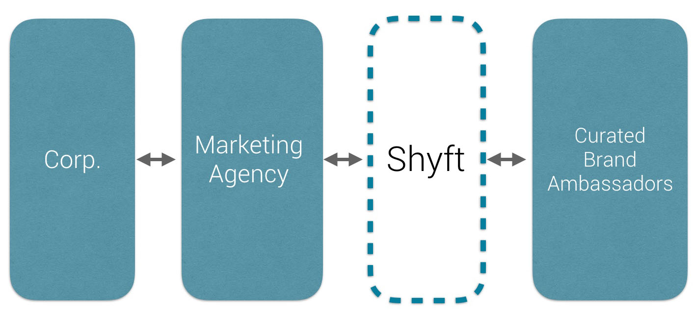
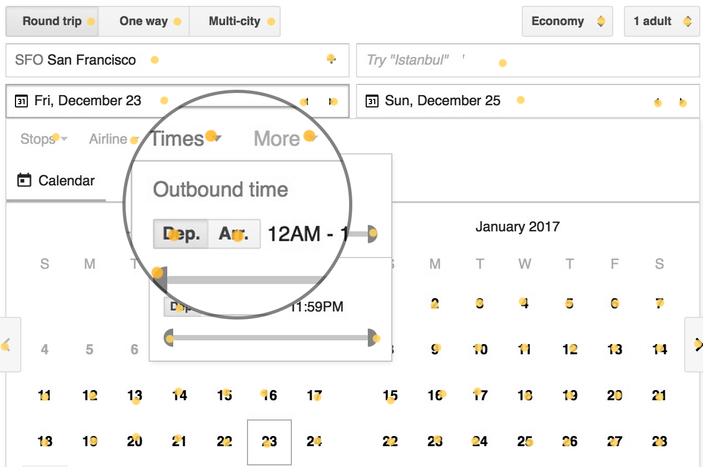
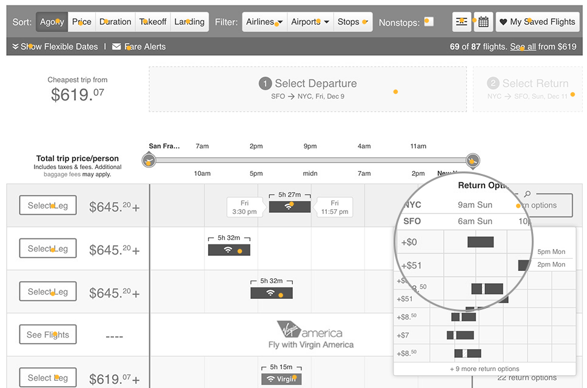
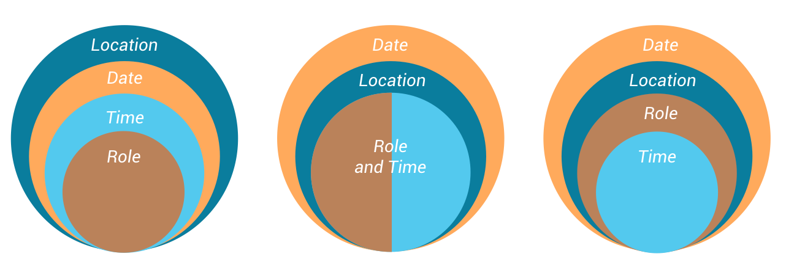
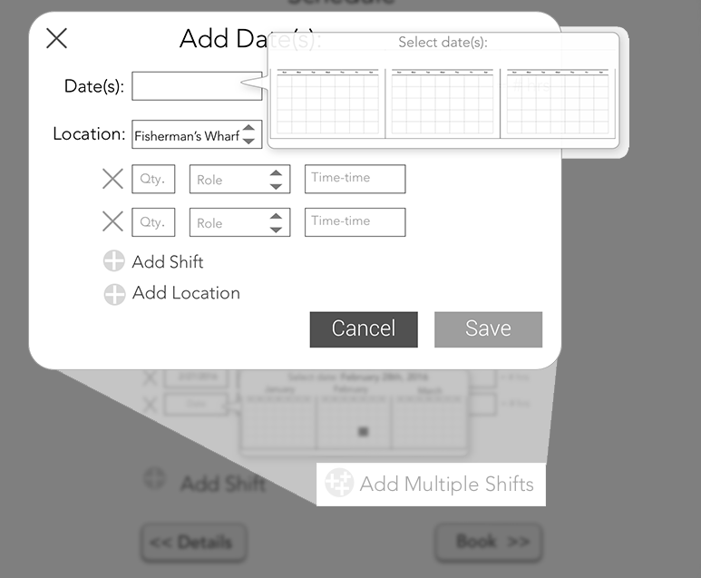
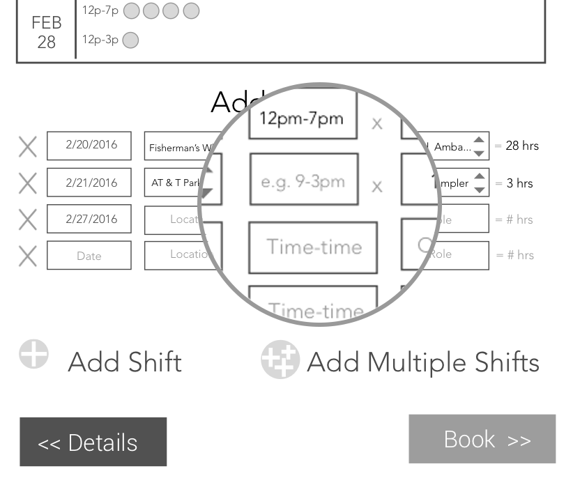
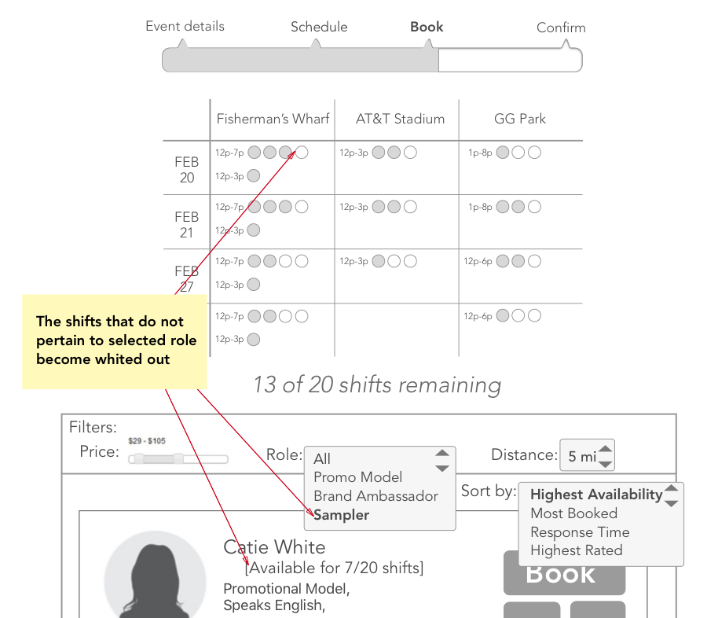
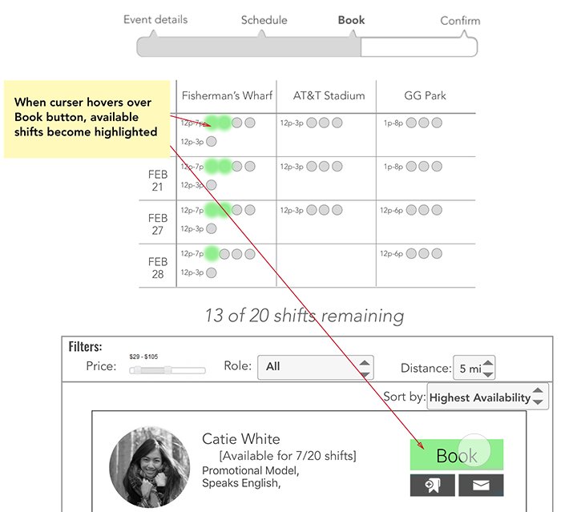

Ben is a creative and imaginative designer. He lights up when presented with problems, talking through goals, and finding solutions. His is a visual story teller and produces wonderful work.
Ben does very good work creating clean-looking and aesthetic webpage design. He has an artistic eye, but also a talent for building sites that are meant to create sales and conversions. He also was very helpful at providing directions and guidance on specific tasks via printscreen images which helped tremendously. I would highly recommend Ben for your webpage projects!
Ben is an incredibly creative guy, often coming up with solutions to problems we didn't even think of. His eye for photography, design, and user experience were of great help to us as we developed our mobile app. His presence in the office was generally accompanied by an aura of enthusiasm, boisterous laughter, and a can-do attitude. Any company looking for a creative thinker, problem solver, and a cheerleader should be happy to have Ben on their team.
Ben is a standout talent who expertly filled a multiplicity of roles that in the context of our start up - or any start up for that matter - made Ben absolutely indispensable. Ben's multitasking abilities made it possible to operate with fewer staff, minimizing the company's burn-rate while simultaneously extending our operational capabilities... I wish Ben would let me hire him again!
Shyft is a platform that helps connect temp. workers, most commonly Brand Ambassadors, to agencies looking to hire. Traditionally, the agency must individually find and vet each of these candidates through reaching to individuals on sites like Craigslist. Shyft aims to take on the heavy lifting and vetting and create a platform where agencies can easily find & book candidates for events. In exchange, they take 5% of proceeds.
To differentiate themselves from their competitors and deliver a quality experience, our client told us that they were focused on three core values: available, reliable, and local. Available is defined as having schedules that are open to the shifts needed. Reliable means that the ambassadors consistently show up and are professional. Local means they are within the local area and have the transportations means to get to their scheduled shifts.

For each event, there can be multiple locations, multiple roles, multiple shifts, and multiple people. You might in some cases want the cheapest staffors, in others you might want the most reliable. The nature of this problem is like a 5-dimensional puzzle. This is a perfect interaction design challenge- to simplify the complex.

Targeting: In order for this model to be successful, you need both the employers and the employees to be willing to use this service over their competitors. When speaking with the client, we found that there was no shortage of potential candidates looking for work, but was instead limited by the the agencies offering work. Therefore, we first focused on optimizing the experience for marketing agencies.
Given that we were trying to solve a problem with many dimensions, we researched other instances where a great amount of information needs to be sorted through to find an ideal choice in as few steps as possible. Booking airline flights is a great example of this. It's hard to display all the information that the users needs without making the interaction feel overwhelming. Many websites make use of hover states, dropdowns, and a lot of exposed buttons so the user can focus on one task at a time without feeling overwhelmed or confused.
We interviewed agencies and brand ambassadors to understand some of their pain points, as well as what method they currently use to schedule & book staff. We found that agencies typically use pen & paper or simply an excel spreedsheet. This lead us to believe there is plenty of room for improvement, as well as understand the current method to ensure that our approach made things simpler, not more complex.
We considered the relationships between Date, Time, Role, & Location. Surely time was within a day, but what-if you had a shift that spanned midnight? Was it more common to have a single location that spanned multiple days or to have a single day that spanned multiple locations? Should a role be coupled with a shift, or should shifts exist inside roles? How common was it that you needed to add multiple roles? As we researched and explored each of these use cases, it helped narrow down how the core interaction would work.
Our first approach to the problem was to have the agency first fill out the details of the event and the shifts they expected to fill. By telling the system all the information that is needed this dramatically simplifies the process once you get to the booking stage. We opted for simplicity, having the user fill out as few fields as possible, while still having the power to input a lot of information and have Shyft do the heavy lifting matching your event with potential candidates. We also separated the task into stages to help it feel more manageable.
 When the user starts searching for people to book, the system automatically organizes your results based on the candidates that are able to fill the most shifts. This allows them to find candidates quickly and minimize the total amount of people to manage.
When all the available shifts are filled, the user is taken to a confirmation page that clearly lays out the line-item cost of people you have booked for each shift, any added tax or fees, and Shyft's fee. After they send out the requests to book, they can check in on the booking status to see who has accepted, who is pending, and who has declined the requests. After 24 hours, whoever hasn't accepted the job request loses the job and the agency can then continue to rebook to fill in the remaining shifts.
The client seemed receptive to the approach, however, wasn't sure that the advertising agency would necessarily be locked into the details of an event they are attempting to book. With the detail first flow, the assumption is that the agency is already constrained by the booking times for the event. However, if there are too few or undesirable results for their desired booking time, they might go back and edit the event details to open their results. Alternatively, the agency might have some staffers that they have worked with before, and have bookmarked for future gigs. They already know the staffers are reliable so would like to hire them again. Therefore, they might start scheduling by first looking at the availability of the desired staffers and then working to make a schedule that fits. This brings us to our second approach.